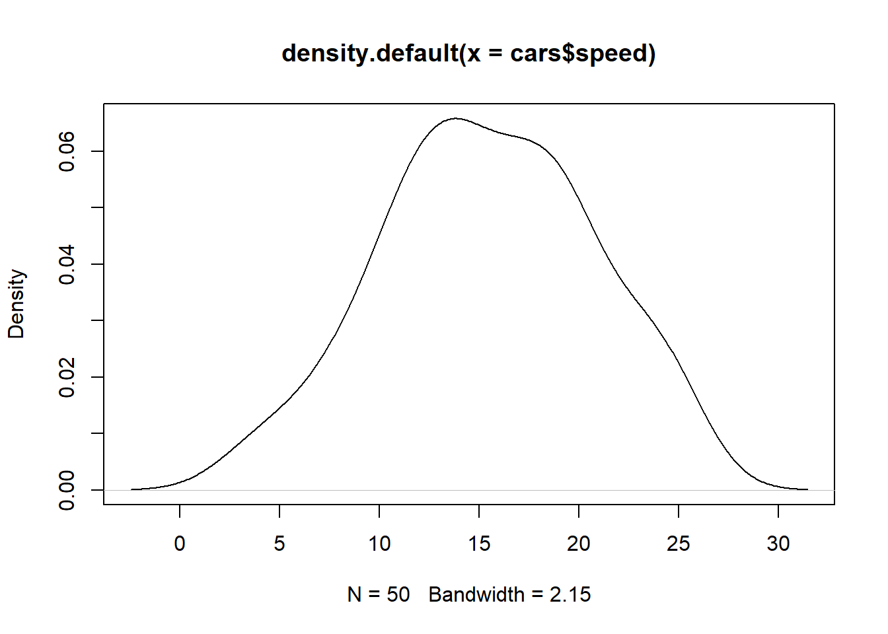
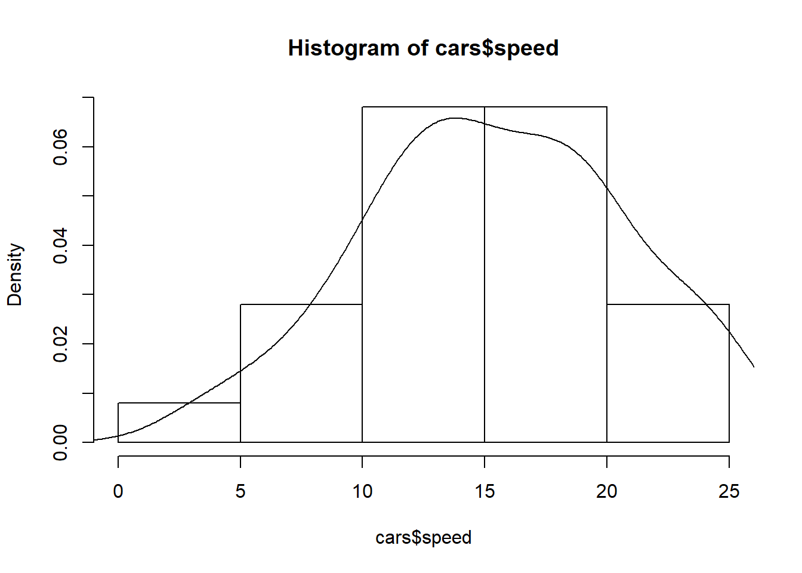
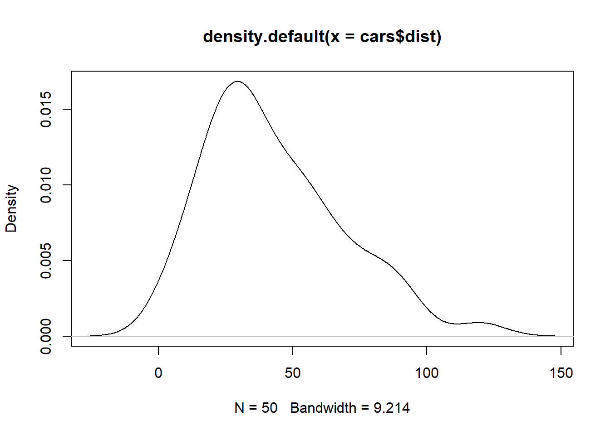
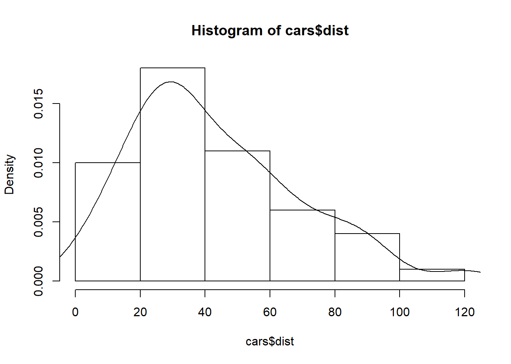
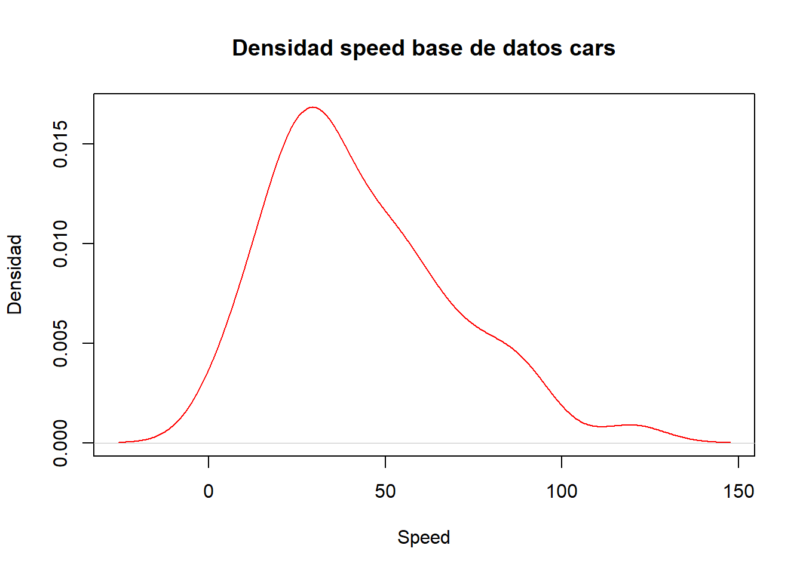
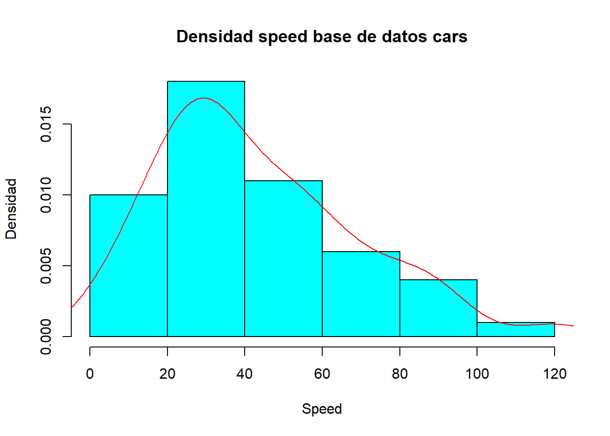

a continuacion se precentan ejemplos que pueden servir de guia a la hora de realizar un grafico de dencidad en R
Los datos con los que se trabaja en los ejemplos se presentan a continuacion:
| speed | dist | |
|---|---|---|
| 1 | 4.00 | 2.00 |
| 2 | 4.00 | 10.00 |
| 3 | 7.00 | 4.00 |
| 4 | 7.00 | 22.00 |
| 5 | 8.00 | 16.00 |
| 6 | 9.00 | 10.00 |
| 7 | 10.00 | 18.00 |
| 8 | 10.00 | 26.00 |
| 9 | 10.00 | 34.00 |
| 10 | 11.00 | 17.00 |
| 11 | 11.00 | 28.00 |
| 12 | 12.00 | 14.00 |
| 13 | 12.00 | 20.00 |
| 14 | 12.00 | 24.00 |
| 15 | 12.00 | 28.00 |
| 16 | 13.00 | 26.00 |
| 17 | 13.00 | 34.00 |
| 18 | 13.00 | 34.00 |
| 19 | 13.00 | 46.00 |
| 20 | 14.00 | 26.00 |
| 21 | 14.00 | 36.00 |
| 22 | 14.00 | 60.00 |
| 23 | 14.00 | 80.00 |
| 24 | 15.00 | 20.00 |
| 25 | 15.00 | 26.00 |
| 26 | 15.00 | 54.00 |
| 27 | 16.00 | 32.00 |
| 28 | 16.00 | 40.00 |
| 29 | 17.00 | 32.00 |
| 30 | 17.00 | 40.00 |
| 31 | 17.00 | 50.00 |
| 32 | 18.00 | 42.00 |
| 33 | 18.00 | 56.00 |
| 34 | 18.00 | 76.00 |
| 35 | 18.00 | 84.00 |
| 36 | 19.00 | 36.00 |
| 37 | 19.00 | 46.00 |
| 38 | 19.00 | 68.00 |
| 39 | 20.00 | 32.00 |
| 40 | 20.00 | 48.00 |
| 41 | 20.00 | 52.00 |
| 42 | 20.00 | 56.00 |
| 43 | 20.00 | 64.00 |
| 44 | 22.00 | 66.00 |
| 45 | 23.00 | 54.00 |
| 46 | 24.00 | 70.00 |
| 47 | 24.00 | 92.00 |
| 48 | 24.00 | 93.00 |
| 49 | 24.00 | 120.00 |
| 50 | 25.00 | 85.00 |
library(xtable)
#print(xtable::xtable(cars),type="html",html.tableattributes="border=0")Para este ejemplo se toma la variable speed
El grafico mas sencillo de densidad puede ser construido con las funciones plot() y density(), el resultado es el siguiente.
plot(density(cars$speed)) otra opcion es la siguiente
hist(cars$speed, freq = FALSE)
lines(density(cars$speed)) ## Ejemplo 2 (Datos cuantitativos continuos)
Para este ejemplo se toma la variable dist y se sigue el mismo prosedimiento del ejemplo anterior.
plot(density(cars$dist))
hist(cars$dist, freq = FALSE)
lines(density(cars$dist)) ## Ejemplo 3
En este ejemplo se presenta un gafico de la variable speed pero esta vez modificando los parametros de las funciones plot(), lines() y hist().
plot(density(cars$dist), main = "Densidad speed base de datos cars", ylab = "Densidad", xlab = "Speed", col=10)
hist(cars$dist, freq = FALSE, main = "Densidad speed base de datos cars", ylab = "Densidad", xlab = "Speed", col="509")
lines(density(cars$dist), col="red")